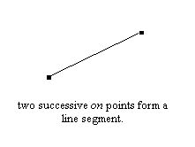
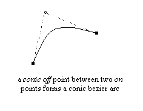
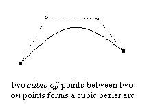
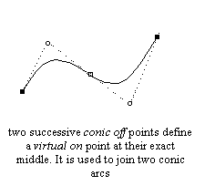
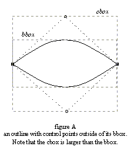
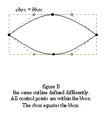

VI. FreeType outlines
The purpose of this section is to present the way FreeType manages vectorial outlines, as well as the most common operations that can be applied on them.
1. FreeType outline description and structure
a. Outline curve decomposition
An outline is described as a series of closed contours in the 2D plane. Each contour is made of a series of line segments and Bézier arcs. Depending on the file format, these can be second-order or third-order polynomials. The former are also called quadratic or conic arcs, and they are used in the TrueType format. The latter are called cubic arcs and are mostly used in the PostScript Type 1 and Type formats.
Each arc is described through a series of start, end, and control points. Each point of the outline has a specific tag which indicates whether it is describes a line segment or an arc. The tags can take the following values:
|
FT_CURVE_TAG_ON |
Used when the point is ‘on’ the curve. This corresponds to start and end points of segments and arcs. The other tags specify what is called an ‘off’ point, i.e., a point which isn't located on the contour itself, but serves as a control point for a Bézier arc. |
|
FT_CURVE_TAG_CONIC |
Used for an ‘off’ point used to control a conic Bézier arc. |
|
FT_CURVE_TAG_CUBIC |
Used for an ‘off’ point used to control a cubic Bézier arc. |
Use the FT_CURVE_TAG(tag) macro to filter out other, internally used flags.
The following rules are applied to decompose the contour's points into segments and arcs:
-
Two successive ‘on’ points indicate a line segment joining them.
-
One conic ‘off’ point between two ‘on’ points indicates a conic Bézier arc, the ‘off’ point being the control point, and the ‘on’ ones the start and end points.
-
Two successive cubic ‘off’ points between two ‘on’ points indicate a cubic Bézier arc. There must be exactly two cubic control points and two ‘on’ points for each cubic arc (using a single cubic ‘off’ point between two ‘on’ points is forbidden, for example).
-
Two successive conic ‘off’ points force the rasterizer to create (during the scan-line conversion process exclusively) a virtual ‘on’ point inbetween, at their exact middle. This greatly facilitates the definition of successive conic Bézier arcs. Moreover, it is the way outlines are described in the TrueType specification.
-
The last point in a contour uses the first as an end point to create a closed contour. For example, if the last two points of a contour were an ‘on’ point followed by a conic ‘off’ point, the first point in the contour would be used as final point to create an ‘on’ – ‘off’ – ‘on’ sequence as described above.
-
The first point in a contour can be a conic ‘off’ point itself; in that case, use the last point of the contour as the contour's starting point. If the last point is a conic ‘off’ point itself, start the contour with the virtual ‘on’ point between the last and first point of the contour.
Note that it is possible to mix conic and cubic arcs in a single contour, however, no font driver of FreeType produces such outlines currently.
|  |  |
|  |  |
b. The FT_Outline descriptor
A FreeType outline is described through a simple structure called FT_Outline. Right now, the following fields are of interest:
| n_points | the number of points in the outline |
| n_contours | the number of contours in the outline |
| points | array of point coordinates |
| contours | array of contour end indices |
| tags | array of point flags |
Here, points is a pointer to an array of FT_Vector records, used to store the vectorial coordinates of each outline point. These are expressed in 1/64th of a pixel, which is also known as the 26.6 fixed-point format.
contours is an array of point indices to delimit contours in the outline. For example, the first contour always starts at point 0, and ends at point contours[0]. The second contour starts at point contours[0]+1 and ends at contours[1], etc. To traverse these points in a callback based manner, use FT_Outline_Decompose.
Note that each contour is closed, and that value of n_points should be equal to contours[n_contours-1]+1 for a valid outline.
Finally, tags is an array of bytes, used to store each outline point's tag.
2. Bounding and control box computations
As described earlier, a bounding box (also called bbox) is simply a rectangle that completely encloses the shape of a given outline. The interesting case is the smallest bounding box possible, and in the following we subsume this under the term ‘bounding box’. Because of the way arcs are defined, Bézier control points are not necessarily contained within an outline's (smallest) bounding box.
Such a situation happens if one Bézier arc is, for example, the upper edge of an outline and an ‘off’ point happens to be above the bbox. However, it is very rare in the case of character outlines because most font designers and creation tools always place ‘on’ points at the extrema of each curved edges (as both the TrueType and PostScript specifications recommend), as it makes hinting much easier.
We thus define the control box (also called cbox) as the smallest possible rectangle that encloses all points of a given outline (including its ‘off’ points). Clearly, it always includes the bbox, and the two boxes are identical in most cases.
Unlike the bbox, the cbox is much faster to compute.
|  |  |
Control and bounding boxes can be computed automatically using the functions FT_Outline_Get_CBox and FT_Outline_Get_BBox. The former function is always very fast, while the latter may be slow in the case of ‘outside’ control points (as it needs to find the extreme of conic and cubic arcs for ‘perfect’ computations). If this isn't the case, it is as fast as computing the control box.
Note also that even though most glyph outlines have equal cbox and bbox values to ease hinting, this is not necessarily the case if a transformation like rotation is applied to them.
3. Coordinates, scaling and grid-fitting
An outline point's vectorial coordinates are expressed in the 26.6 format, i.e. in 1/64th of a pixel, hence the coordinates ‘(1.0,-2.5)’ is stored as the integer pair ‘(64,-192)’, to name an example.
After a glyph outline is scaled from the EM grid (in font units) to the current character dimensions, the hinter or grid-fitter is in charge of aligning important outline points (mainly edge delimiters) to the pixel grid. Even though this process is much too complex to be described in a few lines, its purpose is mainly to round point positions, while trying to preserve important properties like widths, stems, etc.
The following operations can be used to round vectorial distances in the 26.6 format to the grid:
round( x ) == ( x + 32 ) & -64 floor( x ) == x & -64 ceiling( x ) == ( x + 63 ) & -64
Once a glyph outline is grid-fitted or transformed, it often is interesting to compute the glyph image's pixel dimensions before rendering it. To do so, one has to consider the following:
The scan-line converter draws all the pixels whose centers fall inside the glyph shape. In B/W rendering mode, it can also detect drop-outs, i.e., discontinuities coming from extremely thin shape fragments, in order to draw the ‘missing’ pixels. These new pixels are always located at a distance less than half of a pixel but it is not easy to predict where they will appear before rendering.
This leads to the following computations:
-
compute the bbox
-
grid-fit the bounding box with the following:
xmin = floor( bbox.xMin ) xmax = ceiling( bbox.xMax ) ymin = floor( bbox.yMin ) ymax = ceiling( bbox.yMax )
-
return pixel dimensions, i.e.
width = (xmax - xmin)/64
and
height = (ymax - ymin)/64
By grid-fitting the bounding box, it is guaranteed that all the pixel centers that are to be drawn, including those coming from drop-out control, will be within the adjusted box. Then the box's dimensions in pixels can be computed.
Note also that, when translating a grid-fitted outline, one should always use integer distances to move an outline in the 2D plane. Otherwise, glyph edges won't be aligned on the pixel grid anymore, and the hinter's work will be lost, producing very low quality bitmaps and pixmaps.
Last update: 07-Dec-2014